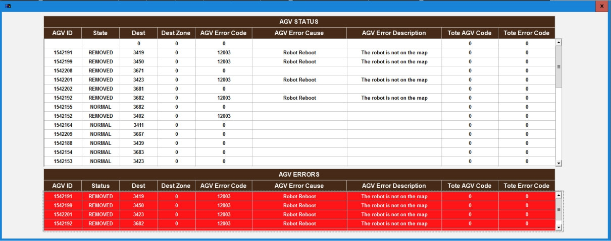

| Procedure ID | proc_use_the_agv_status_screen_to_identify_current_agv_location_and_presence_of_error_codes_v1 |
|---|---|
| Title | Use the AGV Status Screen to Identify Current AGV Location and Presence of Error Codes |
| Procedure Type | reference |
| Primary Role | L1_support |
| Support Safe | Yes |
| Validation Status | needs_sme_review |
| Merge Status | source_finalized |
Use the documented AGV Status HMI screen as a reference to view AGV location information and determine whether any current AGV error codes are displayed.
Use when a user needs to access the AGV Status screen and verify what AGV location information is shown and whether current AGV error codes are displayed.
Responsible role: L1_support
Instruction:
On the HMI display, press AGV STATUS in the upper-left corner of the display to access the AGV Status screen.
Expected result:
The AGV Status screen opens.
Screens / Images:

Stop or Escalate If:
Responsible role: L1_support
Instruction:
Review the AGV Status screen and identify the information showing the location of AGVs.
Expected result:
AGV location information is identified on the AGV Status screen.
Screens / Images:
Stop or Escalate If:
Responsible role: L1_support
Instruction:
Review the AGV Status screen and identify whether any current error codes are displayed for an AGV.
Expected result:
The user determines whether current AGV error codes are displayed.
Screens / Images:
Stop or Escalate If:
Responsible role: L1_support
Instruction:
Compare what is shown on the AGV Status screen to the documented purpose of the screen: showing AGV locations and any error codes the AGV is currently experiencing.
Expected result:
The displayed screen content matches the documented AGV Status screen purpose.
Screens / Images:
Stop or Escalate If:
Responsible role: L1_support
Instruction:
Record the observed AGV location information and whether any current error codes are present on the AGV Status screen.
Expected result:
Observed AGV location information and current error code presence are documented.
Screens / Images:
Stop or Escalate If: